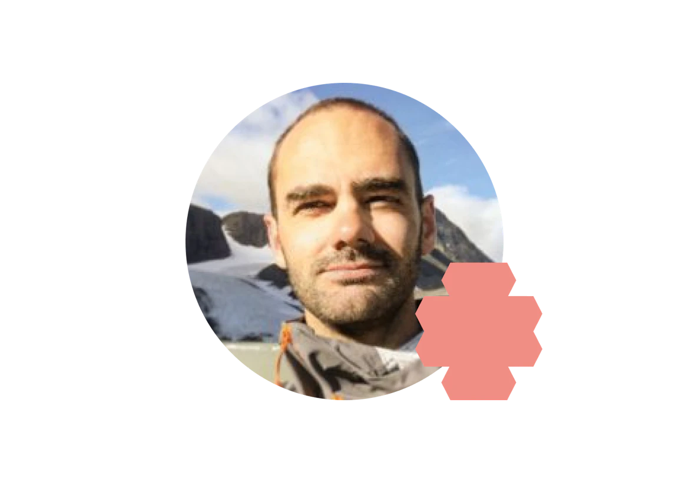
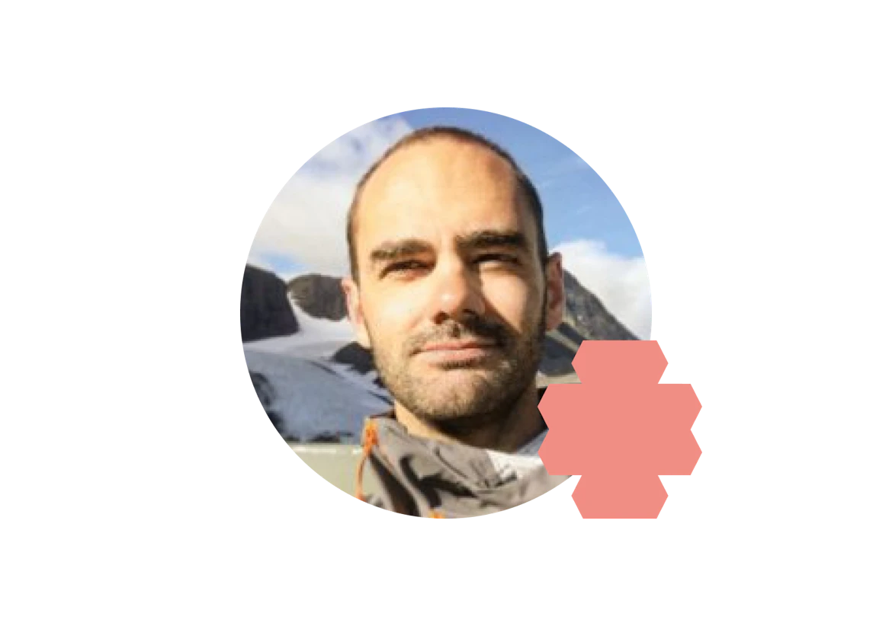

Chas Academy
Lär känna oss
Vi kan IT! Och snart kan du också det. Med pedagogik och kunskap stöttar våra branschledande huvudlärare studenter i resan från drömjobb till verklighet. Här på Chas Academy är vi ett litet gäng som drivs av samma mål - att bygga de bästa IT-utbildningarna som leder till en framtid inom design och utveckling. Som del av det ledande bolaget inom IT, Chas Visual Management, har vi 10 års branscherfarenhet i ryggen och ett engagerat nätverk vid vår sida. Välkommen att joina oss på Chas Academy!

 
